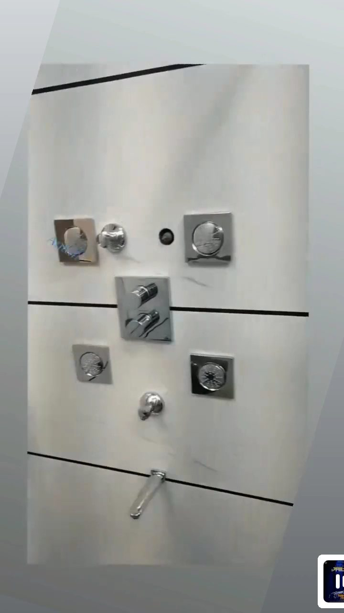

“Tony arrived at our place within 4 hours of our having called Brothers Plumbing for help. He explained really clearly what gave rise to the issue and gave us some good advice.”
Emilie K. · Google★★★★★
Since 1969 · 130 Osler Street
A Greek plumber, a shop in the Junction, fifty-odd years.
Brothers Plumbing started in the west end in 1969 and still runs from the same street. The trucks are stocked, the office answers the phone, and the technicians are the ones customers write reviews about.
Crew photoOwner to supply: the crew and trucks outside 130 Osler, or the founder's original shop photo
What has not changed
You learn a lot about plumbing in five decades, and more about what keeps people calling back: show up when you said, with the parts, tell the customer the price before you start, and do not leave until it works. That was the standard the founder set and it is still how a Brothers visit goes.
The company grew up with the neighbourhood. The Junction, Davenport, Bloor West, Roncesvalles and High Park are the home run, and most of the houses there were built between 1900 and 1940. Lead services, clay laterals, cast-iron stacks and galvanized supply lines are routine for us, not surprises.
The crew
These are the names that keep turning up in Google reviews. Every technician is licensed, insured, background-checked and drug-tested before entering a home.
- Tony
- Jimmy
- Aman
- Jacob
- Johnathan
- Patrick
Hours and the emergency line
Trucks run 7 days a week, 7 am to 7 pm, because plumbing problems do not keep office hours. Outside those hours the line is still answered, and true emergencies, burst pipes, backups, no water, are dispatched around the clock.
Awards and memberships
Consumer Choice Award, Toronto Central. Listed on HomeStars. Owner to confirm: Ontario plumbing licence number, BBB accreditation and any manufacturer authorizations, so they can go in the footer.
4.4299 Google reviews
Toronto · updated Oct 2026
Toronto · updated Oct 2026
Reviews
What customers say, with the technician named.
“Thanks to Brothers Plumbing, Jacob and Tony in particular, for their work replacing shut-off valves in the bathrooms and installing new toilets. Professional, informative, and helpful.”
Susan G. · Google★★★★★“I contacted Brothers on Saturday for an issue with my kitchen sink. A technician called me within a few minutes. I was given an estimate before the visit and had no surprises after.”
Elle L. · Google★★★★★“We have used Brothers Plumbing for 23 years and have always had beautiful work from them. Aman and Johnathan came to repair my sink and explained that my kitchen faucet was rusted.”
Erica H. · Google★★★★★“They were able to complete the work we needed on the same day as the consultation. They explained pricing, all the work they were going to do, then did a thorough walkthrough with us at the end.”
V. DS · Google★★★★★“They came quickly, on the same morning I called, and cleared a tough drain clog. Super friendly, fast, and professional.”
Mercy J. · Google★★★★★“We had a leak in our home the day we took possession. The dispatcher was very kind, and I got a call from Jimmy within 15 minutes asking the relevant details before arriving.”
Onil B. · Google★★★★★“My kitchen sink was backing up significantly and I was concerned about the complexity of the fix. The technician knew exactly what to do and handled it with ease.”
Erick O. · Google★★★★★Work
Recent jobs.
From the company's Google profile. The owner can add more from the truck phone.

Basement bathroom, finished
New toilet, shower valve and drain, tiled and trimmed.

New copper main, west end
Replaced a choked galvanized line; pressure back to normal.

Under-slab drain replacement
Floor opened only along the failed run, then patched.

Kitchen shut-offs and supplies
Quarter-turn valves and braided lines, one visit.

Shower valve and body sprays
Rough-in and trim for a multi-outlet shower.